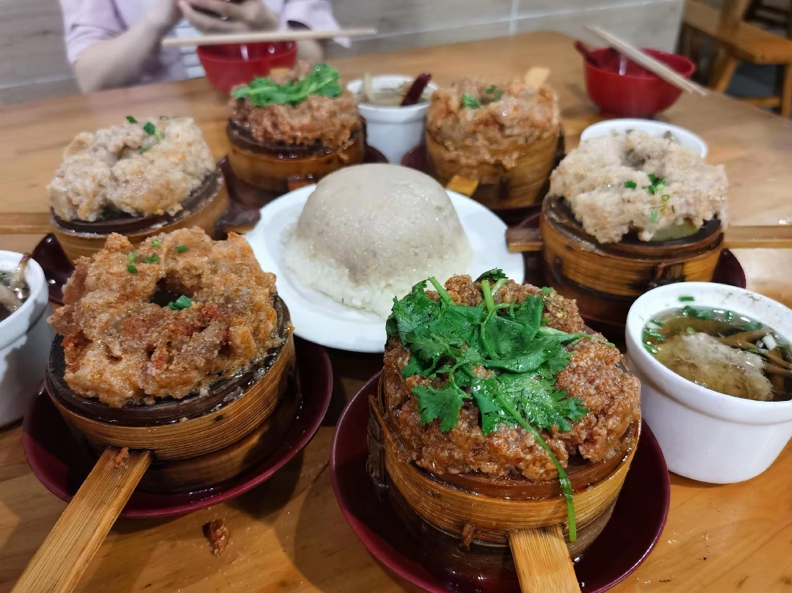

竹笼粉蒸 · 市井经典 · 万州美食三绝之一
万州格格是重庆市万州区的传统特色小吃，属川菜渝派下河帮菜，与万州烤鱼、万州杂酱面并称"万州美食三绝"，已入选首批"重庆地标菜"名单。"格格"是万县俗语，意为蒸笼——那种只有巴掌大小、用楠竹或水竹编织的圆形小蒸笼，与清朝的"格格"毫无关系。[reference:0][reference:1][reference:2]
万州格格主要有羊肉格格、肥肠格格、排骨格格三种，底部垫上芋头、土豆或红薯，上面铺上拌好豆瓣酱、花椒面、辣椒面等调料的肉料，放入竹制蒸笼，层层叠叠架在蒸锅上猛火蒸熟。上桌前淋少许香油，撒上葱花和香菜，一笼一人份，趁热吃最过瘾。[reference:3][reference:4]
最受欢迎的经典款。选用渝巴山区山羊肉，入口麻辣鲜香，肉质软糯，一点膻味都没有。出锅时撒上大量新鲜香菜，既能去膻又增添清香，是万州人的心头好。[reference:5]
人气首选肥肠处理得极干净，毫无异味。油脂在蒸制过程中渗出，被底部的土豆红薯吸收，肥肠软糯有嚼头，麻辣味渗透到每一块肥肠里，下饭一绝。[reference:6]
嚼劲十足精选软边纤排，骨头细肉多。排骨腌制入味后裹上米粉，蒸熟后轻轻一嗦即可脱骨。蒜香与麻辣交融，肉质鲜嫩多汁，垫底的土豆吸收肉汁后尤为美味。[reference:7]
蒜香脱骨相传三国时期（公元221年），蜀汉昭烈帝刘备为关羽报仇，屯重兵于万州天生城，准备发动夷陵之战。刘备治军严明，下令不得侵扰百姓，士兵们的锅碗瓢盆等一切用具都不能从民间掠取。蜀军缺锅少罐，于是就地取材，砍来山上的竹子编织成碗口大小的蒸笼，拌上杂粮粉蒸羊肉食之，竟然香气扑鼻、爽口无比。从此，这种以竹笼蒸肉的做法便在万州流传开来，经过1800余年的演变，形成了今天的万州格格。[reference:8][reference:9]
万州格格的制作颇为讲究。先将大米掺入少许糯米和花椒，在锅中炒香后研磨成粗颗粒的米粉；新鲜羊腿肉（或排骨、肥肠）切成小块，加入剁椒、姜米、豆瓣酱、香油等调料腌制入味，再拌上米粉搅匀。[reference:10]
蒸笼底部垫上芋头、土豆或红薯块（最底下最好放一片鲜柑子叶去膻增香），再将拌好的肉料铺上。一个个巴掌大的竹笼层层叠叠架在大铁锅上，旺火蒸制约十分钟即熟。有些食客偏爱刚上汽八成熟的口感，称为吃"滴笼水"，肉刚好熟过心，嚼劲十足。[reference:11]
万州老字号，本地人从小吃到大，羊肉格格和肥肠格格最受欢迎。藕圆子和萝卜汤也值得一试，人均约25元吃到撑。据说夏天不开门，去之前记得确认。[reference:12]
太白街道卫校大门口桂香园旁负一楼
传承万州格格经典手艺，创始人聂龙云坚持传统蒸制工艺，认为万州格格不仅是美食，更承载着这座城市的烟火气与市井生活氛围。[reference:14]
万州城区
吃格格讲究趁热享用。刚端上桌的格格还冒着腾腾热气，先俯身深吸一口那竹香与肉香交织的蒸汽，然后才提筷轻轻拈起一块肉，放进嘴里细嚼慢咽——肉块软糯绵香，麻辣在舌尖化开，回味悠长。吃格格的乐趣还在于吃完后将一个个空蒸笼叠成高高的一摞，仿佛在宣告"战果"，充满市井趣味。[reference:15]
一般标配一碗海带汤或萝卜汤、一碗白米饭，先喝几口热汤疏通肠胃，再夹一坨格格肉送入口中，麻辣鲜香顿时唤醒味蕾。老吃客还会蘸上又辣又香的油煎干海椒面，一口气吃上七八笼，吃得酣畅淋漓。[reference:16]